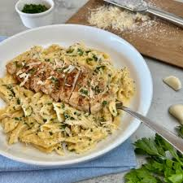

Chicken Alfredo Pasta

Description
Chicken Alfredo Pasta is a rich, creamy dish that combines tender fettuccine with a luscious Alfredo sauce made from butter, cream, and Parmesan cheese. The addition of perfectly cooked, seasoned chicken enhances its savory flavors, creating a hearty and satisfying meal. Garnished with extra Parmesan and parsley, it’s a comforting classic loved by pasta enthusiasts.
Beloved for its simplicity and indulgence, Chicken Alfredo Pasta is perfect for both elegant dinners and cozy family meals. Its creamy texture and robust flavors make it a versatile, easy-to-prepare favorite that never fails to impress.
Ingridients
- Fettuccine (12 ounces)
- Chicken breasts (2, sliced thinly)
- Heavy cream (1 cup)
- Butter (4 tablespoons)
- Garlic (2 cloves, minced)
- Parmesan cheese (1 cup, grated)
- Salt and pepper (to taste)
- Olive oil (1 tablespoon)
Steps
- Cook fettuccine in salted boiling water until al dente. Drain and set aside.
- Heat olive oil in a skillet. Season chicken with salt and pepper, then cook until golden and fully cooked. Set aside.
- In the same skillet, melt butter and sauté garlic until fragrant. Stir in heavy cream and simmer for 2–3 minutes.
- Add Parmesan cheese, stirring until melted and the sauce thickens. Toss in the cooked fettuccine and chicken.
- Serve warm, garnished with extra Parmesan if desired.